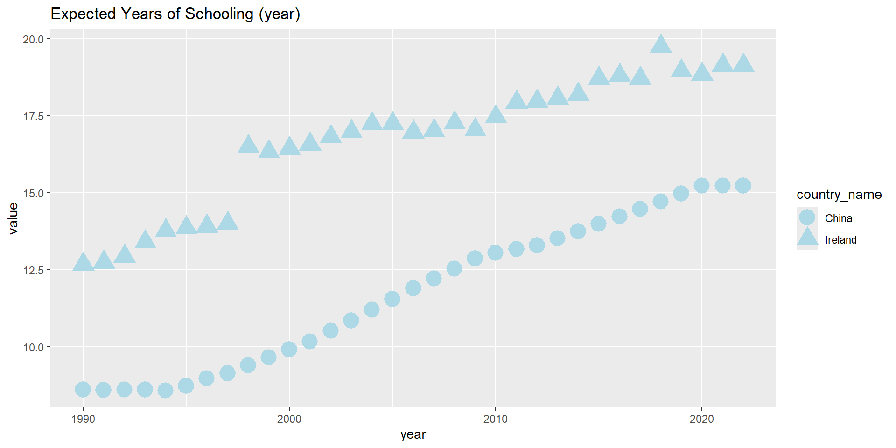

1.Use data.table to read in the data and assign the correct class to the variables.
The data I choose is:
Human Development Indicators for Ireland
Human Development Indicators for China
In this step I’ll load required libraries and datasets
# load librarylibrary(data.table)library(ggplot2)# load datasets, skip first rowcountry1 <-fread("Human Development Indicators for Ireland2024.csv",skip=1)country2 <-fread("Human Development Indicators for China2024.csv",skip=1)# convert to data table format, good for large sizecountry1_DT <-as.data.table(country1)country2_DT <-as.data.table(country2)class(country1_DT$'#indicator+value+num')
[1] "numeric"
1.1
Assign the correct class to the variables, here the variable unit is correct: numeric for ‘Value’ and int for ‘Year’
country_code country_name indicator_id
<char> <char> <char>
1: IRL Ireland abr
2: IRL Ireland abr
3: IRL Ireland abr
4: IRL Ireland abr
5: IRL Ireland abr
---
890: IRL Ireland se_m
891: IRL Ireland se_m
892: IRL Ireland se_m
893: IRL Ireland se_m
894: IRL Ireland se_m
indicator_name
<char>
1: Adolescent Birth Rate (births per 1,000 women ages 15-19)
2: Adolescent Birth Rate (births per 1,000 women ages 15-19)
3: Adolescent Birth Rate (births per 1,000 women ages 15-19)
4: Adolescent Birth Rate (births per 1,000 women ages 15-19)
5: Adolescent Birth Rate (births per 1,000 women ages 15-19)
---
890: Population with at least some secondary education, male (% ages 25 and older)
891: Population with at least some secondary education, male (% ages 25 and older)
892: Population with at least some secondary education, male (% ages 25 and older)
893: Population with at least some secondary education, male (% ages 25 and older)
894: Population with at least some secondary education, male (% ages 25 and older)
index_id index_name value year
<char> <char> <num> <int>
1: GII Gender Inequality Index 15.814 1990
2: GII Gender Inequality Index 16.584 1991
3: GII Gender Inequality Index 16.457 1992
4: GII Gender Inequality Index 15.454 1993
5: GII Gender Inequality Index 14.375 1994
---
890: GII Gender Inequality Index 85.499 2018
891: GII Gender Inequality Index 85.957 2019
892: GII Gender Inequality Index 86.417 2020
893: GII Gender Inequality Index 86.417 2021
894: GII Gender Inequality Index 86.417 2022
2. Merge the data data sets using data.table
# base R example， by=(); for data.table , .on(...)#print(colnames(country2_DT))# useing data table to joining tablesmerged_DT <-rbind(country1_DT, country2_DT) #merged_DT <- country1_DT[country1_DTT, on = .(country_code,country_name, #indicator_id,indicator_name, index_id,index_name, value, year)]merged_DT
country_code country_name indicator_id
<char> <char> <char>
1: IRL Ireland abr
2: IRL Ireland abr
3: IRL Ireland abr
4: IRL Ireland abr
5: IRL Ireland abr
---
1766: CHN China se_m
1767: CHN China se_m
1768: CHN China se_m
1769: CHN China se_m
1770: CHN China years_of_schooling
indicator_name
<char>
1: Adolescent Birth Rate (births per 1,000 women ages 15-19)
2: Adolescent Birth Rate (births per 1,000 women ages 15-19)
3: Adolescent Birth Rate (births per 1,000 women ages 15-19)
4: Adolescent Birth Rate (births per 1,000 women ages 15-19)
5: Adolescent Birth Rate (births per 1,000 women ages 15-19)
---
1766: Population with at least some secondary education, male (% ages 25 and older)
1767: Population with at least some secondary education, male (% ages 25 and older)
1768: Population with at least some secondary education, male (% ages 25 and older)
1769: Population with at least some secondary education, male (% ages 25 and older)
1770: Years of schooling (%)
index_id index_name value year
<char> <char> <num> <int>
1: GII Gender Inequality Index 15.814 1990
2: GII Gender Inequality Index 16.584 1991
3: GII Gender Inequality Index 16.457 1992
4: GII Gender Inequality Index 15.454 1993
5: GII Gender Inequality Index 14.375 1994
---
1766: GII Gender Inequality Index 85.354 2019
1767: GII Gender Inequality Index 86.366 2020
1768: GII Gender Inequality Index 86.366 2021
1769: GII Gender Inequality Index 86.366 2022
1770: MPI Multidimensional Poverty Index 20.663 2014
3. Quick data exploration
here show the variable names of the merged data sets:
we quickly explore the difference between Ireland and China
Here we can see The mean,min and max for Ireland and China’s Expected Years of Schooling (years) for past 33 years. Ireland has a much higher eys for the quick check.
#Ireland and China's gender mean In equality Indexmerged_DT[indicator_id=="eys", .(eys_mean =mean(value),eys_min =min(value),eys_max =max(value), .N), by= country_name]
do the same for Life Expectancy at Birth (years) and Material footprint per capita (tonnes). This time Ireland has a slightly higher le and a much higher mf in the past 33 years
compare Expected Years of Schooling (years) and rank it by year and country. we could find that both countries’s year is increasing over the past 33 years
Key: <year, value>
year value country_code country_name indicator_id
<int> <num> <char> <char> <char>
1: 1990 12.679 IRL Ireland eys
2: 1991 12.741 IRL Ireland eys
3: 1992 12.938 IRL Ireland eys
4: 1993 13.409 IRL Ireland eys
5: 1994 13.765 IRL Ireland eys
6: 1995 13.861 IRL Ireland eys
7: 1996 13.907 IRL Ireland eys
8: 1997 13.989 IRL Ireland eys
9: 1998 16.495 IRL Ireland eys
10: 1999 16.325 IRL Ireland eys
11: 2000 16.430 IRL Ireland eys
12: 2001 16.563 IRL Ireland eys
13: 2002 16.806 IRL Ireland eys
14: 2003 16.982 IRL Ireland eys
15: 2004 17.240 IRL Ireland eys
16: 2005 17.239 IRL Ireland eys
17: 2006 16.971 IRL Ireland eys
18: 2007 17.014 IRL Ireland eys
19: 2008 17.262 IRL Ireland eys
20: 2009 17.037 IRL Ireland eys
21: 2010 17.463 IRL Ireland eys
22: 2011 17.938 IRL Ireland eys
23: 2012 17.956 IRL Ireland eys
24: 2013 18.070 IRL Ireland eys
25: 2014 18.183 IRL Ireland eys
26: 2015 18.709 IRL Ireland eys
27: 2016 18.793 IRL Ireland eys
28: 2017 18.705 IRL Ireland eys
29: 2018 19.756 IRL Ireland eys
30: 2019 18.945 IRL Ireland eys
31: 2020 18.840 IRL Ireland eys
32: 2021 19.126 IRL Ireland eys
33: 2022 19.126 IRL Ireland eys
year value country_code country_name indicator_id
indicator_name index_id index_name
<char> <char> <char>
1: Expected Years of Schooling (years) HDI Human Development Index
2: Expected Years of Schooling (years) HDI Human Development Index
3: Expected Years of Schooling (years) HDI Human Development Index
4: Expected Years of Schooling (years) HDI Human Development Index
5: Expected Years of Schooling (years) HDI Human Development Index
6: Expected Years of Schooling (years) HDI Human Development Index
7: Expected Years of Schooling (years) HDI Human Development Index
8: Expected Years of Schooling (years) HDI Human Development Index
9: Expected Years of Schooling (years) HDI Human Development Index
10: Expected Years of Schooling (years) HDI Human Development Index
11: Expected Years of Schooling (years) HDI Human Development Index
12: Expected Years of Schooling (years) HDI Human Development Index
13: Expected Years of Schooling (years) HDI Human Development Index
14: Expected Years of Schooling (years) HDI Human Development Index
15: Expected Years of Schooling (years) HDI Human Development Index
16: Expected Years of Schooling (years) HDI Human Development Index
17: Expected Years of Schooling (years) HDI Human Development Index
18: Expected Years of Schooling (years) HDI Human Development Index
19: Expected Years of Schooling (years) HDI Human Development Index
20: Expected Years of Schooling (years) HDI Human Development Index
21: Expected Years of Schooling (years) HDI Human Development Index
22: Expected Years of Schooling (years) HDI Human Development Index
23: Expected Years of Schooling (years) HDI Human Development Index
24: Expected Years of Schooling (years) HDI Human Development Index
25: Expected Years of Schooling (years) HDI Human Development Index
26: Expected Years of Schooling (years) HDI Human Development Index
27: Expected Years of Schooling (years) HDI Human Development Index
28: Expected Years of Schooling (years) HDI Human Development Index
29: Expected Years of Schooling (years) HDI Human Development Index
30: Expected Years of Schooling (years) HDI Human Development Index
31: Expected Years of Schooling (years) HDI Human Development Index
32: Expected Years of Schooling (years) HDI Human Development Index
33: Expected Years of Schooling (years) HDI Human Development Index
indicator_name index_id index_name
#eys_CHN
4. 1
eys_CHN
Key: <year, value>
year value country_code country_name indicator_id
<int> <num> <char> <char> <char>
1: 1990 8.606 CHN China eys
2: 1991 8.596 CHN China eys
3: 1992 8.600 CHN China eys
4: 1993 8.606 CHN China eys
5: 1994 8.581 CHN China eys
6: 1995 8.725 CHN China eys
7: 1996 8.975 CHN China eys
8: 1997 9.137 CHN China eys
9: 1998 9.393 CHN China eys
10: 1999 9.649 CHN China eys
11: 2000 9.905 CHN China eys
12: 2001 10.160 CHN China eys
13: 2002 10.506 CHN China eys
14: 2003 10.852 CHN China eys
15: 2004 11.199 CHN China eys
16: 2005 11.545 CHN China eys
17: 2006 11.891 CHN China eys
18: 2007 12.203 CHN China eys
19: 2008 12.519 CHN China eys
20: 2009 12.853 CHN China eys
21: 2010 13.043 CHN China eys
22: 2011 13.158 CHN China eys
23: 2012 13.284 CHN China eys
24: 2013 13.511 CHN China eys
25: 2014 13.743 CHN China eys
26: 2015 13.978 CHN China eys
27: 2016 14.218 CHN China eys
28: 2017 14.462 CHN China eys
29: 2018 14.709 CHN China eys
30: 2019 14.962 CHN China eys
31: 2020 15.218 CHN China eys
32: 2021 15.218 CHN China eys
33: 2022 15.218 CHN China eys
year value country_code country_name indicator_id
indicator_name index_id index_name
<char> <char> <char>
1: Expected Years of Schooling (years) HDI Human Development Index
2: Expected Years of Schooling (years) HDI Human Development Index
3: Expected Years of Schooling (years) HDI Human Development Index
4: Expected Years of Schooling (years) HDI Human Development Index
5: Expected Years of Schooling (years) HDI Human Development Index
6: Expected Years of Schooling (years) HDI Human Development Index
7: Expected Years of Schooling (years) HDI Human Development Index
8: Expected Years of Schooling (years) HDI Human Development Index
9: Expected Years of Schooling (years) HDI Human Development Index
10: Expected Years of Schooling (years) HDI Human Development Index
11: Expected Years of Schooling (years) HDI Human Development Index
12: Expected Years of Schooling (years) HDI Human Development Index
13: Expected Years of Schooling (years) HDI Human Development Index
14: Expected Years of Schooling (years) HDI Human Development Index
15: Expected Years of Schooling (years) HDI Human Development Index
16: Expected Years of Schooling (years) HDI Human Development Index
17: Expected Years of Schooling (years) HDI Human Development Index
18: Expected Years of Schooling (years) HDI Human Development Index
19: Expected Years of Schooling (years) HDI Human Development Index
20: Expected Years of Schooling (years) HDI Human Development Index
21: Expected Years of Schooling (years) HDI Human Development Index
22: Expected Years of Schooling (years) HDI Human Development Index
23: Expected Years of Schooling (years) HDI Human Development Index
24: Expected Years of Schooling (years) HDI Human Development Index
25: Expected Years of Schooling (years) HDI Human Development Index
26: Expected Years of Schooling (years) HDI Human Development Index
27: Expected Years of Schooling (years) HDI Human Development Index
28: Expected Years of Schooling (years) HDI Human Development Index
29: Expected Years of Schooling (years) HDI Human Development Index
30: Expected Years of Schooling (years) HDI Human Development Index
31: Expected Years of Schooling (years) HDI Human Development Index
32: Expected Years of Schooling (years) HDI Human Development Index
33: Expected Years of Schooling (years) HDI Human Development Index
indicator_name index_id index_name
4. 2
now analysis the Life Expectancy at Birth (years). This time get the same result but using different method-‘keyby = TRUE’. sort using country list (China 33 then Ireland 33). we found that the life time is increasing , but Ireland is slightly higher than China
Key: <country_name, year, value>
country_name year value country_code indicator_id
<char> <int> <num> <char> <char>
1: China 1990 68.005 CHN le
2: China 1991 68.169 CHN le
3: China 1992 68.734 CHN le
4: China 1993 69.216 CHN le
5: China 1994 69.520 CHN le
6: China 1995 70.008 CHN le
7: China 1996 70.266 CHN le
8: China 1997 70.672 CHN le
9: China 1998 71.172 CHN le
10: China 1999 71.419 CHN le
11: China 2000 71.881 CHN le
12: China 2001 72.606 CHN le
13: China 2002 72.985 CHN le
14: China 2003 73.371 CHN le
15: China 2004 73.748 CHN le
16: China 2005 74.111 CHN le
17: China 2006 74.504 CHN le
18: China 2007 74.762 CHN le
19: China 2008 74.872 CHN le
20: China 2009 75.343 CHN le
21: China 2010 75.599 CHN le
22: China 2011 75.903 CHN le
23: China 2012 76.192 CHN le
24: China 2013 76.452 CHN le
25: China 2014 76.717 CHN le
26: China 2015 76.977 CHN le
27: China 2016 77.218 CHN le
28: China 2017 77.248 CHN le
29: China 2018 77.744 CHN le
30: China 2019 77.968 CHN le
31: China 2020 78.077 CHN le
32: China 2021 78.211 CHN le
33: China 2022 78.587 CHN le
34: Ireland 1990 74.842 IRL le
35: Ireland 1991 75.031 IRL le
36: Ireland 1992 75.428 IRL le
37: Ireland 1993 75.294 IRL le
38: Ireland 1994 75.801 IRL le
39: Ireland 1995 75.478 IRL le
40: Ireland 1996 75.830 IRL le
41: Ireland 1997 75.980 IRL le
42: Ireland 1998 76.189 IRL le
43: Ireland 1999 76.094 IRL le
44: Ireland 2000 76.542 IRL le
45: Ireland 2001 77.109 IRL le
46: Ireland 2002 77.600 IRL le
47: Ireland 2003 78.111 IRL le
48: Ireland 2004 78.513 IRL le
49: Ireland 2005 78.916 IRL le
50: Ireland 2006 79.152 IRL le
51: Ireland 2007 79.555 IRL le
52: Ireland 2008 79.763 IRL le
53: Ireland 2009 80.046 IRL le
54: Ireland 2010 80.523 IRL le
55: Ireland 2011 80.633 IRL le
56: Ireland 2012 80.752 IRL le
57: Ireland 2013 80.968 IRL le
58: Ireland 2014 81.307 IRL le
59: Ireland 2015 81.416 IRL le
60: Ireland 2016 81.550 IRL le
61: Ireland 2017 81.917 IRL le
62: Ireland 2018 82.086 IRL le
63: Ireland 2019 82.259 IRL le
64: Ireland 2020 82.470 IRL le
65: Ireland 2021 81.998 IRL le
66: Ireland 2022 82.716 IRL le
country_name year value country_code indicator_id
indicator_name index_id index_name
<char> <char> <char>
1: Life Expectancy at Birth (years) HDI Human Development Index
2: Life Expectancy at Birth (years) HDI Human Development Index
3: Life Expectancy at Birth (years) HDI Human Development Index
4: Life Expectancy at Birth (years) HDI Human Development Index
5: Life Expectancy at Birth (years) HDI Human Development Index
6: Life Expectancy at Birth (years) HDI Human Development Index
7: Life Expectancy at Birth (years) HDI Human Development Index
8: Life Expectancy at Birth (years) HDI Human Development Index
9: Life Expectancy at Birth (years) HDI Human Development Index
10: Life Expectancy at Birth (years) HDI Human Development Index
11: Life Expectancy at Birth (years) HDI Human Development Index
12: Life Expectancy at Birth (years) HDI Human Development Index
13: Life Expectancy at Birth (years) HDI Human Development Index
14: Life Expectancy at Birth (years) HDI Human Development Index
15: Life Expectancy at Birth (years) HDI Human Development Index
16: Life Expectancy at Birth (years) HDI Human Development Index
17: Life Expectancy at Birth (years) HDI Human Development Index
18: Life Expectancy at Birth (years) HDI Human Development Index
19: Life Expectancy at Birth (years) HDI Human Development Index
20: Life Expectancy at Birth (years) HDI Human Development Index
21: Life Expectancy at Birth (years) HDI Human Development Index
22: Life Expectancy at Birth (years) HDI Human Development Index
23: Life Expectancy at Birth (years) HDI Human Development Index
24: Life Expectancy at Birth (years) HDI Human Development Index
25: Life Expectancy at Birth (years) HDI Human Development Index
26: Life Expectancy at Birth (years) HDI Human Development Index
27: Life Expectancy at Birth (years) HDI Human Development Index
28: Life Expectancy at Birth (years) HDI Human Development Index
29: Life Expectancy at Birth (years) HDI Human Development Index
30: Life Expectancy at Birth (years) HDI Human Development Index
31: Life Expectancy at Birth (years) HDI Human Development Index
32: Life Expectancy at Birth (years) HDI Human Development Index
33: Life Expectancy at Birth (years) HDI Human Development Index
34: Life Expectancy at Birth (years) HDI Human Development Index
35: Life Expectancy at Birth (years) HDI Human Development Index
36: Life Expectancy at Birth (years) HDI Human Development Index
37: Life Expectancy at Birth (years) HDI Human Development Index
38: Life Expectancy at Birth (years) HDI Human Development Index
39: Life Expectancy at Birth (years) HDI Human Development Index
40: Life Expectancy at Birth (years) HDI Human Development Index
41: Life Expectancy at Birth (years) HDI Human Development Index
42: Life Expectancy at Birth (years) HDI Human Development Index
43: Life Expectancy at Birth (years) HDI Human Development Index
44: Life Expectancy at Birth (years) HDI Human Development Index
45: Life Expectancy at Birth (years) HDI Human Development Index
46: Life Expectancy at Birth (years) HDI Human Development Index
47: Life Expectancy at Birth (years) HDI Human Development Index
48: Life Expectancy at Birth (years) HDI Human Development Index
49: Life Expectancy at Birth (years) HDI Human Development Index
50: Life Expectancy at Birth (years) HDI Human Development Index
51: Life Expectancy at Birth (years) HDI Human Development Index
52: Life Expectancy at Birth (years) HDI Human Development Index
53: Life Expectancy at Birth (years) HDI Human Development Index
54: Life Expectancy at Birth (years) HDI Human Development Index
55: Life Expectancy at Birth (years) HDI Human Development Index
56: Life Expectancy at Birth (years) HDI Human Development Index
57: Life Expectancy at Birth (years) HDI Human Development Index
58: Life Expectancy at Birth (years) HDI Human Development Index
59: Life Expectancy at Birth (years) HDI Human Development Index
60: Life Expectancy at Birth (years) HDI Human Development Index
61: Life Expectancy at Birth (years) HDI Human Development Index
62: Life Expectancy at Birth (years) HDI Human Development Index
63: Life Expectancy at Birth (years) HDI Human Development Index
64: Life Expectancy at Birth (years) HDI Human Development Index
65: Life Expectancy at Birth (years) HDI Human Development Index
66: Life Expectancy at Birth (years) HDI Human Development Index
indicator_name index_id index_name
4. 3
For Material footprint per capita (tonnes), I want to check data for recent 24 years. We can found that Ireland has a overall higher footprint. China ’s is increase and Ireland’s is increase then decreasing in recent 24 years
Key: <country_name, year, value>
country_name year value country_code indicator_id
<char> <int> <num> <char> <char>
1: China 2001 9.023 CHN mf
2: China 2002 9.510 CHN mf
3: China 2003 9.931 CHN mf
4: China 2004 10.875 CHN mf
5: China 2005 11.555 CHN mf
6: China 2006 12.765 CHN mf
7: China 2007 13.690 CHN mf
8: China 2008 14.400 CHN mf
9: China 2009 16.532 CHN mf
10: China 2010 18.432 CHN mf
11: China 2011 20.296 CHN mf
12: China 2012 21.295 CHN mf
13: China 2013 22.860 CHN mf
14: China 2014 23.329 CHN mf
15: China 2015 22.859 CHN mf
16: China 2016 22.683 CHN mf
17: China 2017 22.697 CHN mf
18: China 2018 22.580 CHN mf
19: China 2019 21.944 CHN mf
20: China 2020 23.089 CHN mf
21: China 2021 23.947 CHN mf
22: China 2022 24.283 CHN mf
23: Ireland 2001 39.804 IRL mf
24: Ireland 2002 43.439 IRL mf
25: Ireland 2003 43.785 IRL mf
26: Ireland 2004 44.454 IRL mf
27: Ireland 2005 51.385 IRL mf
28: Ireland 2006 61.137 IRL mf
29: Ireland 2007 51.461 IRL mf
30: Ireland 2008 40.210 IRL mf
31: Ireland 2009 32.561 IRL mf
32: Ireland 2010 27.504 IRL mf
33: Ireland 2011 23.771 IRL mf
34: Ireland 2012 20.217 IRL mf
35: Ireland 2013 20.572 IRL mf
36: Ireland 2014 21.422 IRL mf
37: Ireland 2015 21.212 IRL mf
38: Ireland 2016 28.478 IRL mf
39: Ireland 2017 28.620 IRL mf
40: Ireland 2018 27.042 IRL mf
41: Ireland 2019 37.983 IRL mf
42: Ireland 2020 36.245 IRL mf
43: Ireland 2021 26.939 IRL mf
44: Ireland 2022 26.347 IRL mf
country_name year value country_code indicator_id
indicator_name index_id
<char> <char>
1: Material footprint per capita (tonnes) PHDI
2: Material footprint per capita (tonnes) PHDI
3: Material footprint per capita (tonnes) PHDI
4: Material footprint per capita (tonnes) PHDI
5: Material footprint per capita (tonnes) PHDI
6: Material footprint per capita (tonnes) PHDI
7: Material footprint per capita (tonnes) PHDI
8: Material footprint per capita (tonnes) PHDI
9: Material footprint per capita (tonnes) PHDI
10: Material footprint per capita (tonnes) PHDI
11: Material footprint per capita (tonnes) PHDI
12: Material footprint per capita (tonnes) PHDI
13: Material footprint per capita (tonnes) PHDI
14: Material footprint per capita (tonnes) PHDI
15: Material footprint per capita (tonnes) PHDI
16: Material footprint per capita (tonnes) PHDI
17: Material footprint per capita (tonnes) PHDI
18: Material footprint per capita (tonnes) PHDI
19: Material footprint per capita (tonnes) PHDI
20: Material footprint per capita (tonnes) PHDI
21: Material footprint per capita (tonnes) PHDI
22: Material footprint per capita (tonnes) PHDI
23: Material footprint per capita (tonnes) PHDI
24: Material footprint per capita (tonnes) PHDI
25: Material footprint per capita (tonnes) PHDI
26: Material footprint per capita (tonnes) PHDI
27: Material footprint per capita (tonnes) PHDI
28: Material footprint per capita (tonnes) PHDI
29: Material footprint per capita (tonnes) PHDI
30: Material footprint per capita (tonnes) PHDI
31: Material footprint per capita (tonnes) PHDI
32: Material footprint per capita (tonnes) PHDI
33: Material footprint per capita (tonnes) PHDI
34: Material footprint per capita (tonnes) PHDI
35: Material footprint per capita (tonnes) PHDI
36: Material footprint per capita (tonnes) PHDI
37: Material footprint per capita (tonnes) PHDI
38: Material footprint per capita (tonnes) PHDI
39: Material footprint per capita (tonnes) PHDI
40: Material footprint per capita (tonnes) PHDI
41: Material footprint per capita (tonnes) PHDI
42: Material footprint per capita (tonnes) PHDI
43: Material footprint per capita (tonnes) PHDI
44: Material footprint per capita (tonnes) PHDI
indicator_name index_id
index_name
<char>
1: Planetary pressures–adjusted Human Development Index
2: Planetary pressures–adjusted Human Development Index
3: Planetary pressures–adjusted Human Development Index
4: Planetary pressures–adjusted Human Development Index
5: Planetary pressures–adjusted Human Development Index
6: Planetary pressures–adjusted Human Development Index
7: Planetary pressures–adjusted Human Development Index
8: Planetary pressures–adjusted Human Development Index
9: Planetary pressures–adjusted Human Development Index
10: Planetary pressures–adjusted Human Development Index
11: Planetary pressures–adjusted Human Development Index
12: Planetary pressures–adjusted Human Development Index
13: Planetary pressures–adjusted Human Development Index
14: Planetary pressures–adjusted Human Development Index
15: Planetary pressures–adjusted Human Development Index
16: Planetary pressures–adjusted Human Development Index
17: Planetary pressures–adjusted Human Development Index
18: Planetary pressures–adjusted Human Development Index
19: Planetary pressures–adjusted Human Development Index
20: Planetary pressures–adjusted Human Development Index
21: Planetary pressures–adjusted Human Development Index
22: Planetary pressures–adjusted Human Development Index
23: Planetary pressures–adjusted Human Development Index
24: Planetary pressures–adjusted Human Development Index
25: Planetary pressures–adjusted Human Development Index
26: Planetary pressures–adjusted Human Development Index
27: Planetary pressures–adjusted Human Development Index
28: Planetary pressures–adjusted Human Development Index
29: Planetary pressures–adjusted Human Development Index
30: Planetary pressures–adjusted Human Development Index
31: Planetary pressures–adjusted Human Development Index
32: Planetary pressures–adjusted Human Development Index
33: Planetary pressures–adjusted Human Development Index
34: Planetary pressures–adjusted Human Development Index
35: Planetary pressures–adjusted Human Development Index
36: Planetary pressures–adjusted Human Development Index
37: Planetary pressures–adjusted Human Development Index
38: Planetary pressures–adjusted Human Development Index
39: Planetary pressures–adjusted Human Development Index
40: Planetary pressures–adjusted Human Development Index
41: Planetary pressures–adjusted Human Development Index
42: Planetary pressures–adjusted Human Development Index
43: Planetary pressures–adjusted Human Development Index
44: Planetary pressures–adjusted Human Development Index
index_name
5. Plotting
plot below comparing the Expected Years of Schooling (in years) between Ireland and China. The data shows that Ireland’s overall schooling time is higher than China’s. Notably, there is a significant jump around 1998 in Ireland. Additionally, both countries have shown an increasing trend in schooling time over the years.
#x <- eys_IRL$year#y1 <- eys_IRL$value#y2 <- eys_CHN$value#plot(x,y1,x,y2)library(hrbrthemes)ggplot(merged_DT[indicator_id=="eys"], aes(x=year, y=value, shape=country_name)) +geom_point(size=6, color="lightblue") +ggtitle("Expected Years of Schooling (year)") #+
#theme_ipsum()

5.1
For Life Expectancy at Birth (years) I want to plot the box plot. We found that Ireland has a higher mean and median